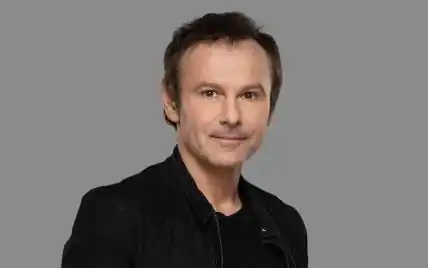
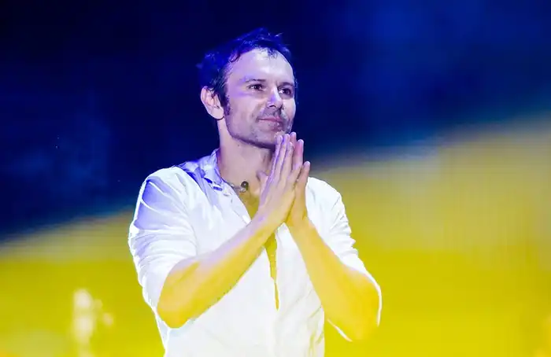
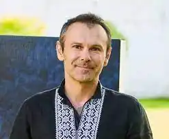

Народився 14 травня 1975 року в Мукачеві в сім'ї відомого українського науковця-фізика Івана Вакарчука (екс-міністр освіти та науки України, з 1990 року був ректором Львівського держуніверситету). Дитинство та юність провів у Львові.
Святослав закінчив Львівську школу № 4 з поглибленим вивченням англійської мови (тепер Львівська лінгвістична гімназія) зі срібною медаллю. Два роки у музичній школі вчився грати на скрипці та одночасно навчався грати на баяні. У шкільні роки грав у КВН, створював шкільний театр, грав у баскетбол.
1990 року поїхав за обміном до Канади, звідки привіз велику колекцію касет і записів рок-музики. У 1991—1996 роках навчався на фізичному факультеті ЛНУ ім. Франка (спеціалізація — теоретична фізика). Друга вища освіта — економіст-міжнародник. 1996 року вступив до аспірантури кафедри теоретичної фізики того ж університету. Вільно володіє українською, англійською, польською мовами. Влітку-восени 1994 року приєднався до арт-рок-гурту "Клан тиші", створеного 1992 року такому складі: Андрій Голяк (вокал), Павло Гудімов (гітара), Юрій Хусточка (бас-гітара), Денис Глінін (ударні), після того, як раніше звідти пішов Андрій Голяк. З 12 жовтня 1994 гурт взяв назву "Океан Ельзи". Святослав Вакарчук став вокалістом, автором більшості текстів і музики та незмінним лідером гурту. Після закінчення університету Вакарчук міг продовжувати навчання за кордоном, але зосередився на музичній кар'єрі. У квітні 1998 року гурт переїхав до Києва, де записав дебютну платівку "Там, де нас нема" (1998). У вересні 2004 року з гурту пішли басист Юрій Хусточка і клавішник Дмитро Шуров (у складі групи від 2000 року), які створили рок-гурт "Esthetic Education", а також гітарист Павло Гудімов, який створив у 2005 рок-гурт "Гудімов". Залишився лише ударник Денис Глінін. Після їхнього відходу Святослав написав пісню "Дякую". Альбом "Ґлорія" (2005) був записаний уже новим складом "Океану Ельзи". У 2005 році Святослав виграв премію "Viva! Найкрасивіші" у номінації "Найкрасивіший українець" за версією журналу "Viva!" та прикрасив його обкладинку. 4 листопада 2008 року в Національному академічному драматичному театрі імені Івана Франка відбувся концерт-презентація нового музичного проєкту Святослава Вакарчука "Вночі". На концерті було представлено 11 композицій, які увійшли до однойменного альбому, що складається з різноманітних за жанром, здебільшого джазових, пісень. Влітку 2009 року Святослав Вакарчук захистив дисертацію на звання кандидата фізико-математичних наук в Інституті фізики конденсованих систем НАН України. Тема роботи: "Суперсиметрія електрона в магнітному полі". Праця над дисертацією тривала багато років, але через постійну зайнятість завершити її вдалося лише 2009 року. Раніше один з альбомів "Океану Ельзи" було названо "Суперсиметрія", а одна з пісень альбому має назву "Susy", що є абревіатурою від supersymmetry. Окрім рідної української, вільно володіє польською, англійською та російською мовами. Наприкінці 2011 року він презентував новий музичний проєкт "Брюссель", в якому представив пісні, що не вписуються до концепції гурту "Океан Ельзи". Для роботи над цим альбомом Святослав запросив музикантів Дмитра Шурова, Макса Малишева, Петра Чернявського та Сергія Бабкіна. Навесні 2012 року проведено тур проєкту "Брюссель". Весною 2016 року гурт "Океан Ельзи" випустив альбом "Без меж" і розпочав дворічний світовий тур, який завершився 17 червня 2017 року у Львові. З 2017 року — член Наглядової ради Меморіального центру Голокосту "Бабин Яр". З 3 серпня 2018 року Святослав є співведучим журналіста Івана Яковини у програмі "Несподівана фізика" на Радіо "НВ". 2021 року випустив свій третій сольний проєкт "Оранжерея". Крім нього, в проєкті взяли участь деякі учасники гурту "Океан Ельзи" — Мілош Єліч, Денис Дудко та Денис Глінін, також Денніс Аду, Григорій Чайка та переможниця проєкту "Голос" Віталіна Мусієнко. В перші дні Російського вторгнення 2022 року, пішов до територіального центру укомплектування і уклав контракт із ЗСУ. Отримав звання лейтенанта Збройних Сил України, і направлений до львівської військово-цивільної адміністрації. Нагороди: Орден Свободи (22 січня 2016) — за значний особистий внесок у державне будівництво, соціально-економічний, науково-технічний, культурно-освітній розвиток Української держави, справу консолідації українського суспільства, багаторічну сумлінну працю. Заслужений артист України (23 серпня 2005) — за значний особистий внесок у соціально-економічний, науковий та культурний розвиток України, вагомі трудові здобутки та активну громадську діяльність Лавреат Премії імені Василя Стуса (2014) 1 травня 2015 року, Святослав Вакарчук отримав звання "Почесного громадянина міста Львова" 14 травня 2015 року Київська міська рада надала Вакарчуку звання "Почесний громадянин Києва".